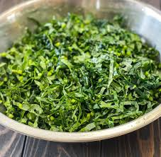

Sukuma Wiki Recipe

Description
Sukuma wiki(collard greens) is a vegetable dish
It is consumed widely and mostly used as an accompaniment to a starch. It is a staple in Kenya
Ingredients
- Sukuma wiki leaves
- 2 onions
- Cooking oil
Steps
- Cut your sukuma wiki leaves into small edible pieces
- Cut the onions into small pieces
- Heat some cooking oil in a pot and cook the onions in low heat until they turn brownish
- Add your cut sukuma wiki and simmer for 10 minutes